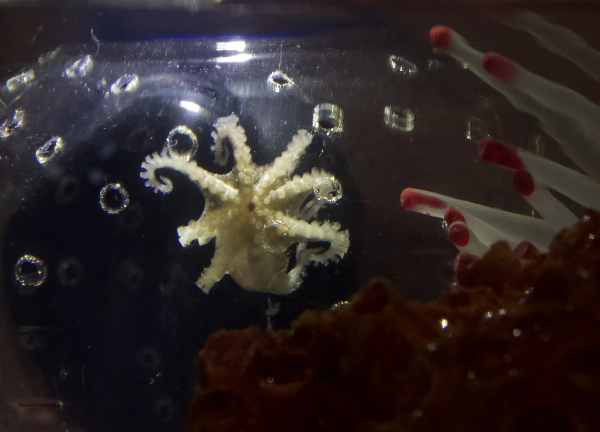

Goff Lab · Johns Hopkins University
Single Cell and Spatial Transcriptomics in Cephalopod Neural Development
Departments of Neuroscience & Genetic Medicine, Johns Hopkins University School of Medicine
Approach
Computational and experimental molecular neuroscience
01
Develop
New single cell and spatial transcriptomics assays, and the computational tools to analyze them.
02
Apply
These tools to challenging biological systems where off-the-shelf assays routinely struggle.
03
Extend
Our methods beyond traditional model organisms, with a focus on cephalopods.
Looking ahead
Research
Future directions
Future directions teaser (2 to 4 projects), linking to the Research page.
Publications
All publications
Recent papers
-
Conservation of Neuron-Astrocyte Correlated Activity in Developing Sensory Pathways.
Glia, 2026
-
A cell fate specification and transition mechanism for human foveolar cone subtype patterning.
Proc Natl Acad Sci U S A, 2026
-
Rroid2 regulates effector-to-memory CD8(+) T cell differentiation during infection in vivo.
Proc Natl Acad Sci U S A, 2025
-
A consensus definition for deep layer 6 excitatory neurons in mouse somatosensory, visual, and motor cortex.
Cell Rep, 2025
-
mNSF: multi-sample non-negative spatial factorization.
Genome Biol, 2025
-
Regulation of translation elongation and integrated stress response in heat-shocked neurons.
Cell Rep, 2025
Join us
Train with us
We train graduate students from the Human Genetics, BCMB, and Neuroscience programs at Johns Hopkins.
Funding
Our research is supported by
- National Science Foundation
- National Institutes of Health / National Institute on Aging
- The Kavli FoundationKavli Scholar
- Johns Hopkins Discovery Fund